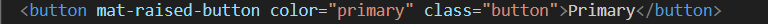

Toggle Button Exemplo
button-toggle: cor, forma, espaçamento
Esse é o estilo padrão do toggle button
pt-br
en
es
Modificando o toggle button
pt-br
en
es
Primerio vamos limitar o tamanho do toggle button, para isso não
aplicamos uma estilização tradicional, criando a classe e definindo o
estilo
